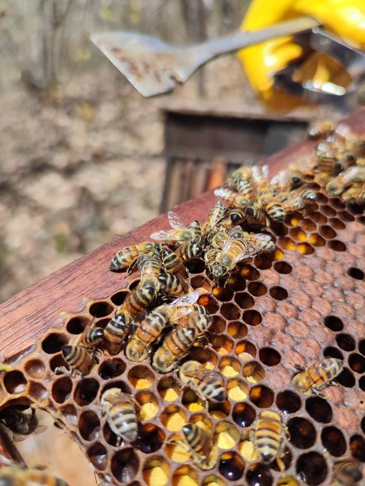

A importância das Abelhas para o Mundo
31/10/2023
As abelhas desempenham um papel vital na manutenção da biodiversidade e na sustentabilidade do nosso planeta. A importância desses pequenos insetos vai muito além do simples fornecimento de mel; elas desempenham um papel fundamental no equilíbrio do ecossistema global e na produção de alimentos.